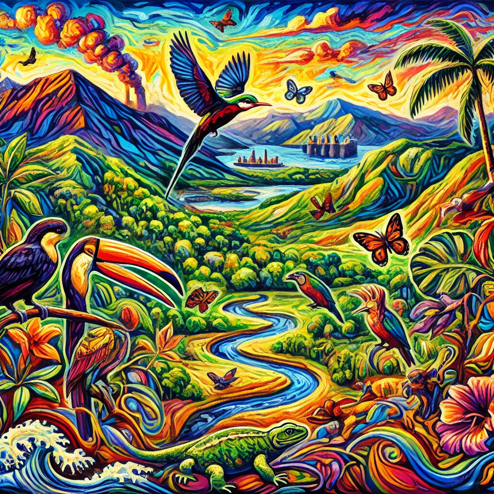

graph TD
A[Conocimiento en Publicaciones Científicas] --> B[Limitación del Acceso]
B --> C[Publicaciones en Inglés]
B --> D[Revistas de Pago]
B --> E[Metodologías Complejas]
E --> F[No Adaptadas a Realidades Locales]
F --> G[Dificultad en la Aplicación Práctica]
G --> H[Retraso en la Implementación de Acciones de Conservación]
A --> I[Impide la Democratización del Conocimiento]
I --> H
H --> J[Protección de Ecosistemas en Riesgo]
J --> K[Necesidad de Ciencia Abierta]
1 El Desafío del Conocimiento Encerrado: Acceso y Usabilidad
El desafío del conocimiento encerrado en publicaciones científicas, especialmente en el contexto de la biodiversidad en Ecuador, limita el acceso a información vital para la gestión y conservación. Mucho del contenido está en inglés y en revistas de pago, dificultando su uso para conservacionistas locales y responsables de políticas. Además, las metodologías complejas o no adaptadas a las realidades locales dificultan aún más la aplicación práctica. Este bloqueo no solo impide una democratización del conocimiento, sino que también retrasa la implementación de acciones urgentes para la protección de ecosistemas, haciendo esencial una transición hacia la ciencia abierta.
1.1 Breve Panorama de la Biodiversidad en Ecuador:
Ecuador es reconocido como uno de los países megadiversos del mundo, a pesar de su pequeño tamaño en comparación con otras naciones. Alberga una variedad única de ecosistemas, desde la Amazonía y los Andes hasta la región costera y las Islas Galápagos, lo que lo convierte en un verdadero hotspot de biodiversidad. Esta riqueza biológica incluye miles de especies de plantas, aves, mamíferos, reptiles e insectos, muchas de ellas endémicas, es decir, que no se encuentran en ningún otro lugar del mundo.

La biodiversidad de Ecuador tiene una importancia global debido a su papel en el mantenimiento de servicios ecosistémicos esenciales como la regulación del clima, el ciclo del agua y la polinización. Además, los ecosistemas ecuatorianos son clave para la investigación científica, ya que ofrecen una ventana única a la evolución, particularmente en áreas como las Galápagos, cuyas especies inspiraron las teorías de Darwin sobre la evolución. Sin embargo, esta biodiversidad está amenazada por actividades humanas como la deforestación, la minería y el cambio climático, lo que hace crucial implementar medidas efectivas de conservación basadas en datos científicos accesibles y aplicables a nivel local.
1.2 El Conocimiento Bloqueado:
El conocimiento científico sobre la biodiversidad, especialmente en Ecuador, está mayormente disponible en publicaciones académicas internacionales, casi siempre en inglés. Estas publicaciones contienen información valiosa que incluye datos primarios sobre la distribución de especies, sus comportamientos, patrones de migración, interacciones ecológicas y respuestas a cambios ambientales, entre otros. Estos datos son cruciales para comprender la dinámica de los ecosistemas, pero debido a que están bloqueados en revistas científicas de pago y en un idioma que no todos dominan, se genera una barrera significativa para los investigadores y conservacionistas locales. Aquellos que no tienen acceso a instituciones que puedan costear estas suscripciones enfrentan una exclusión directa del conocimiento más actualizado. En consecuencia, la posibilidad de utilizar estos datos para realizar análisis locales, desarrollar estrategias de conservación o incluso capacitar a nuevos profesionales en las técnicas más avanzadas se ve gravemente limitada.
graph TD
A[Conocimiento Científico] -->|Publicaciones Internacionales| B[Datos sobre Especies]
B --> C[Comprensión de Ecosistemas]
B --> D[Revistas de Pago en Inglés]
D -->|Barreras de Idioma y Costo| E[Acceso Limitado]
E -->|Falta de Datos| F[Análisis Local Restringido]
F -->|Exclusión de Profesionales Locales| G[Impacto en Conservación]
G --> H[Freno al Desarrollo Local de Técnicas y Tecnologias]
Este bloqueo del conocimiento no solo obstaculiza el acceso a datos primarios, sino también a metodologías avanzadas que podrían aplicarse en el campo de la conservación. Las técnicas de monitoreo de biodiversidad, análisis genético, o estudios de impacto ecológico, frecuentemente descritas en estas publicaciones, son de gran valor para los profesionales que trabajan en terreno, pero su inaccessibilidad limita su adopción.
Además de restringir el acceso a información actualizada, este bloqueo también impide la utilización de datos primarios en el entrenamiento de nuevas generaciones de científicos y en la identificación de vacíos de información crítica. Los datos primarios, como registros de especies raras, mapas de distribución o estudios de impacto ecológico, son fundamentales no solo para la investigación avanzada, sino también para crear herramientas de modelado predictivo que permitan anticipar cambios futuros en la biodiversidad debido al cambio climático u otras amenazas.
Estos datos pueden ser utilizados en programas de formación académica para enseñar análisis de datos, minería de textos o modelado ecológico, pero la falta de acceso limita el desarrollo de estas competencias en estudiantes y profesionales locales. Al mismo tiempo, la ausencia de una fuente abierta y accesible de estos datos impide la identificación de brechas en el conocimiento, como la falta de estudios sobre ciertas regiones o especies menos investigadas, que podrían ser críticas para la conservación a nivel local. Esto genera una desconexión entre las necesidades de conservación en Ecuador y la información disponible globalmente.
graph TD
A[Acceso Restringido a Datos] -->|Bloqueo de Información| B[Impedimento para Nuevos Científicos]
A --> C[Imposibilidad de Identificar Vacíos Críticos]
B --> D[Falta de Capacitación en Análisis y Modelado]
C --> E[Desconexión con Necesidades Locales]
D --> F[Límite en Desarrollo de Competencias Locales]
E --> G[Decisiones No Informadas]
F --> H[Retraso en Estrategias de Conservación]
G --> I[Dependencia de Datos Internacionales]
I --> J[Datos No Aplicables a Ecosistemas Locales]
Como resultado, se restringe la capacidad de tomar decisiones informadas y oportunas, lo que a su vez retrasa la implementación de estrategias efectivas para la protección de la biodiversidad. Además, las investigaciones locales, que podrían tener una relevancia directa para las condiciones ecológicas y sociales de Ecuador, muchas veces quedan eclipsadas por estudios foráneos que, aunque importantes, no siempre responden a las necesidades y desafíos específicos del país. Esto no solo dificulta la adaptación de soluciones prácticas a nivel nacional, sino que también refuerza la dependencia de datos internacionales que, en muchos casos, no son aplicables en su totalidad a los ecosistemas ecuatorianos.
1.3 Barreras en la Educación y la Práctica:
Los estudiantes y profesionales de la conservación en Ecuador enfrentan múltiples barreras que limitan su acceso a metodologías y resultados científicos relevantes para su trabajo. Estas barreras no solo dificultan su capacidad para mantenerse al día con los avances más recientes en el campo, sino que también impiden que apliquen de manera efectiva el conocimiento necesario para abordar los desafíos únicos de la biodiversidad en Ecuador.
1.3.1 Idioma y Acceso a Publicaciones Científicas
Una de las barreras más importantes es el idioma. La gran mayoría de los estudios científicos sobre biodiversidad, conservación y ecología se publican en inglés. Para los estudiantes y profesionales ecuatorianos que no dominan este idioma, esto representa un obstáculo significativo para la comprensión de conceptos avanzados y nuevas metodologías. A pesar de que muchos tienen un nivel básico o intermedio de inglés, la complejidad del lenguaje técnico utilizado en las publicaciones científicas puede ser difícil de seguir. Esta barrera lingüística no solo afecta la capacidad de los investigadores locales para acceder al conocimiento internacional, sino que también impide que el conocimiento producido en Ecuador tenga mayor visibilidad en el ámbito global.
Además del idioma, el acceso a las publicaciones académicas es otro gran desafío. Gran parte de la investigación científica está publicada en revistas de pago que requieren costosas suscripciones, lo que limita el acceso a las instituciones académicas más grandes que pueden pagar estos servicios. Sin embargo, para estudiantes, universidades pequeñas o profesionales que trabajan en organizaciones locales sin grandes presupuestos, este costo es prohibitivo. Como resultado, muchos se ven obligados a depender de fuentes secundarias o investigaciones obsoletas, perdiéndose de los avances más recientes en la conservación de la biodiversidad.
graph TD
A[Obstáculo del Idioma] -->|Publicaciones en Inglés| B[Dificultad en Comprensión de Conceptos Avanzados]
A --> C[Reducción de Visibilidad Global del Conocimiento Local]
B --> D[Barrera para Acceso a Metodologías Nuevas]
C --> E[Menor Impacto Internacional de Estudios Ecuatorianos]
F[Acceso Restringido a Publicaciones] -->|Revistas de Pago| G[Costos Prohibitivos]
G --> H[Dependencia de Fuentes Secundarias]
H --> I[Acceso Limitado a Avances Recientes]
1.3.2 Metodologías y Contexto Local
Otro obstáculo significativo es la falta de metodologías adaptadas al contexto local. Las técnicas y modelos utilizados en estudios internacionales, aunque científicamente sólidos, a menudo no se ajustan a las condiciones específicas de los ecosistemas y comunidades de Ecuador. Por ejemplo, muchos estudios de biodiversidad en otras partes del mundo se centran en grandes áreas geográficas con infraestructuras tecnológicas avanzadas que no están disponibles en Ecuador. Esto crea una desconexión entre las herramientas y métodos sugeridos en la literatura científica y las necesidades prácticas sobre el terreno.
Esta falta de adaptación también se ve reflejada en la capacitación limitada en el uso de tecnologías emergentes. El análisis de datos, la teledetección y la automatización, herramientas clave en la investigación actual, requieren habilidades avanzadas en informática y estadística, áreas en las que muchos estudiantes y profesionales no han recibido suficiente formación. Esto deja a los investigadores locales en desventaja cuando intentan utilizar metodologías modernas para estudiar y conservar la biodiversidad.
graph TD
A[Falta de Metodologías Locales] -->|Modelos Internacionales No Adaptados| B[Desconexión con Ecosistemas de Ecuador]
B --> C[Herramientas No Aplicables en Terreno]
A --> D[Capacitación Limitada en Tecnologías Emergentes]
D --> E[Falta de Habilidades en Informática y Estadística]
E --> F[Desventaja en Uso de Metodologías Modernas]
F --> G[Dificultad en Investigación y Conservación Local]
1.3.3 Desigualdad en Recursos Educativos
La desigualdad en el acceso a recursos educativos es una barrera más profunda. Las universidades ecuatorianas, especialmente las que se encuentran fuera de los centros urbanos más grandes, carecen con frecuencia de los recursos necesarios para ofrecer capacitación actualizada en temas como biología computacional, gestión de datos y análisis estadístico avanzado. Esto afecta directamente a los estudiantes que no tienen la oportunidad de aprender las técnicas más modernas, lo que a su vez limita su capacidad para realizar investigaciones de vanguardia y aplicar conocimientos científicos en el manejo de la biodiversidad.
1.3.4 Falta de Colaboración Internacional
Finalmente, la falta de redes de colaboración internacional también representa un desafío importante. Los investigadores en Ecuador a menudo no tienen acceso a las mismas oportunidades de intercambio académico, conferencias o proyectos colaborativos que sus colegas en países más desarrollados. Esto no solo restringe su acceso a nuevos conocimientos, sino que también limita sus oportunidades para contribuir al avance de la ciencia global, lo que perpetúa el ciclo de desigualdad en el acceso y producción de conocimiento científico.
En resumen, los estudiantes y profesionales de la conservación en Ecuador enfrentan una combinación de barreras lingüísticas, económicas, tecnológicas y educativas que limitan su acceso y uso de metodologías científicas relevantes. Para superar estos desafíos, es fundamental promover la ciencia abierta, fortalecer las redes de colaboración y adaptar las metodologías globales al contexto local, garantizando que el conocimiento científico sea accesible y aplicable en la gestión de la biodiversidad del país.